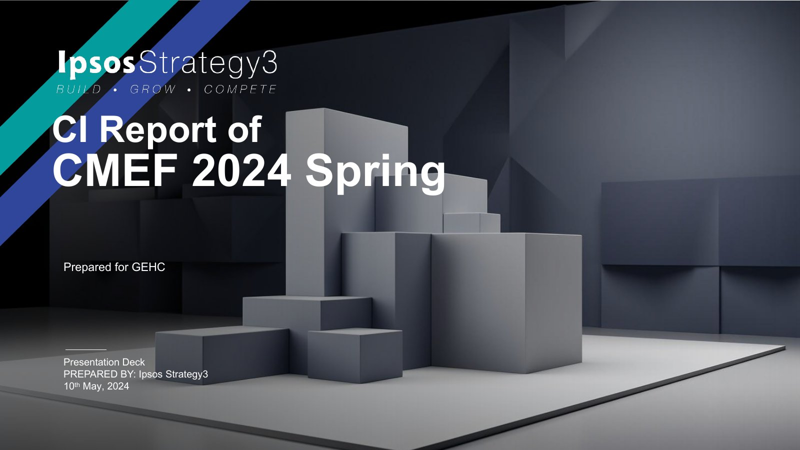
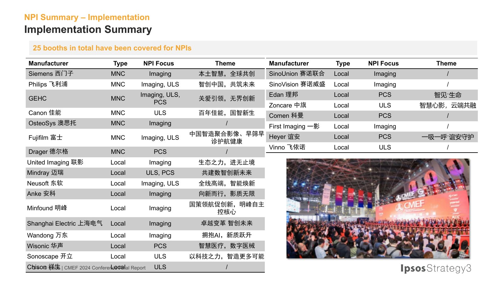
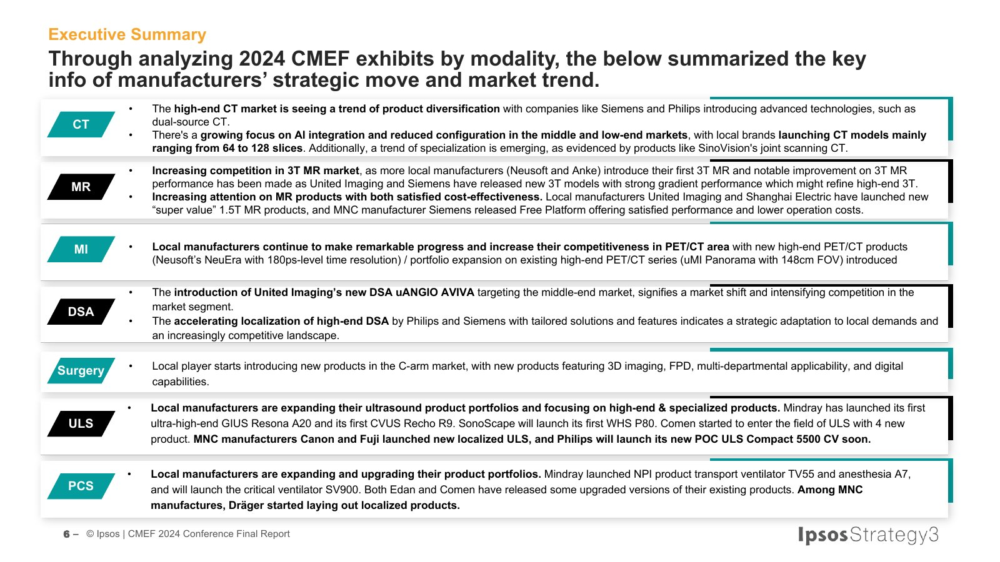
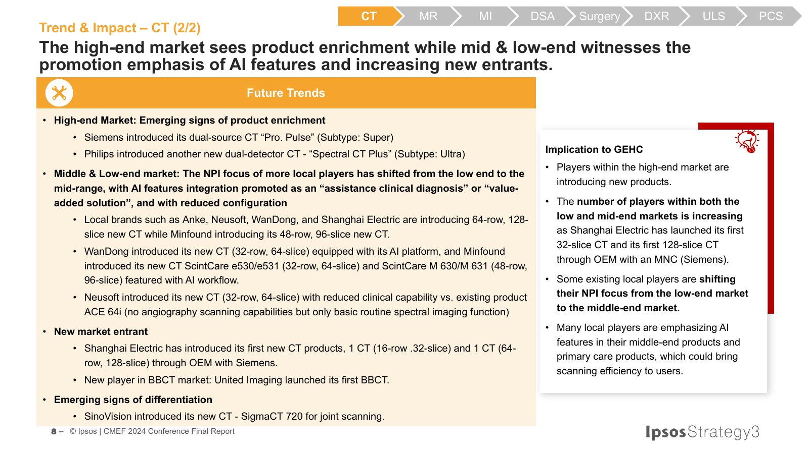
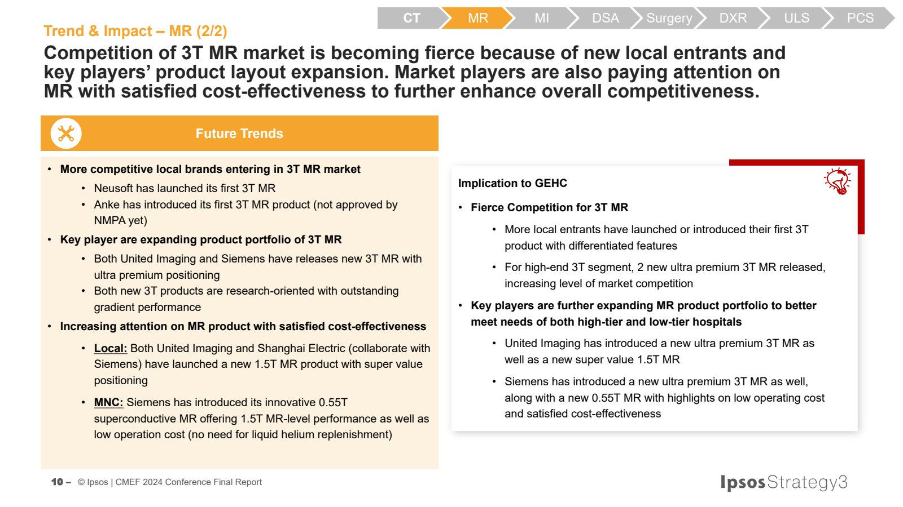
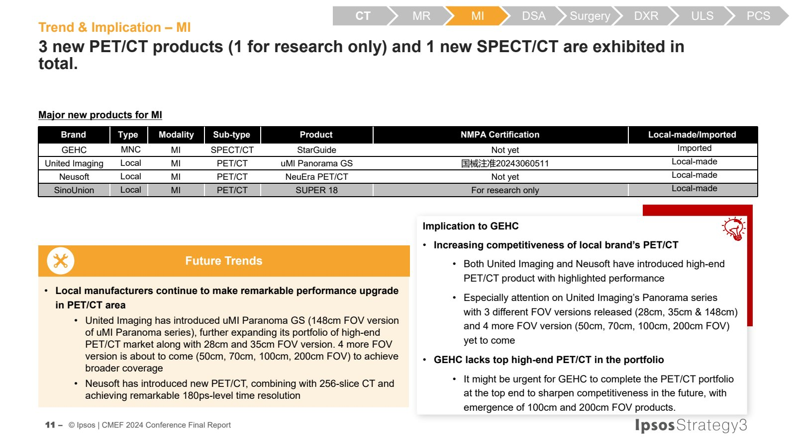
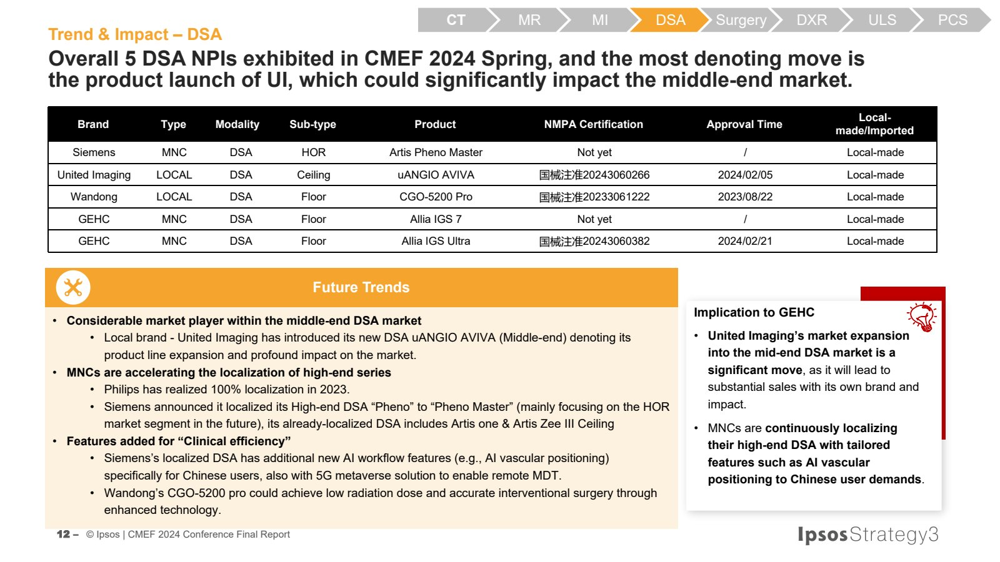

Healthcare market research
MedTech Market Intelligence Deck
A healthcare market intelligence deck summarizing product launches, modality trends, competitive landscape, and strategic implications for medical device stakeholders. Public version is intentionally sanitized.

- RoleStrategy3 Consulting Intern, Medical Devices Group
- ScopeDesk research, competitive intelligence, trend synthesis, and executive deck organization
- IndustryMedical devices and healthcare technology
- PrivacyOnly selected sanitized visuals are included
Selected visuals
Inside the work






